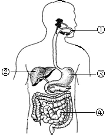
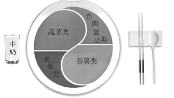

2022年北京市中考生物真题 · 选择题 第6、7、8、9、10题
6. 下列营养物质不需要经过消化可以直接被人体吸收的是
A. 淀粉B. 脂肪
C. 维生素D. 蛋白质
7. 如图是人体消化系统结构模式图。下列相关叙述错误 是
是

A. 脂肪可在①中初步分解
B. ②所示的消化腺可分泌胆汁
C. ③分泌的消化液含蛋白酶
D. 消化和吸收的主要场所是④
8. 《中国居民膳食指南（2022）》通过平衡膳食餐盘（如图）宣传平衡膳食的理念。下列相关叙述错误的是

A. 肉蛋奶是人体所需能量的主要来源
B. 水果、蔬菜可提供维生素
C. 摄入食物的类别要多样
D. 摄入食物的量要适当
9. 血细胞包括红细胞、白细胞和血小板，其中血小板的功能是
A. 吞噬病菌B. 运输氧气C. 促进止血D. 运输代谢废物
10. 毛细血管是连通最小动脉与静脉的血管。与毛细血管物质交换功能相适应的特点不包括
A. 数量多，分布广B. 管壁薄，由一层上皮细胞构成
C. 管内血流速度快D. 管径小，只允许红细胞单行通过